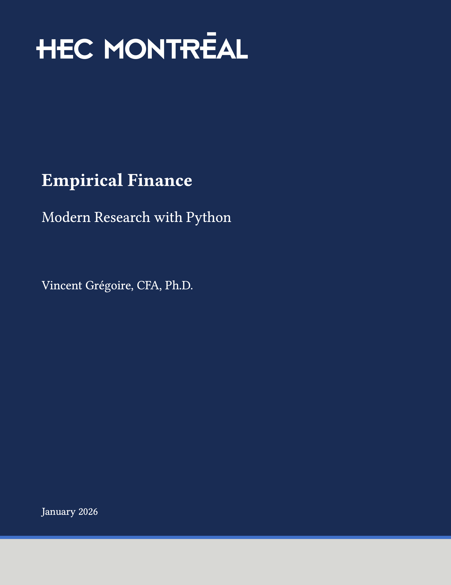
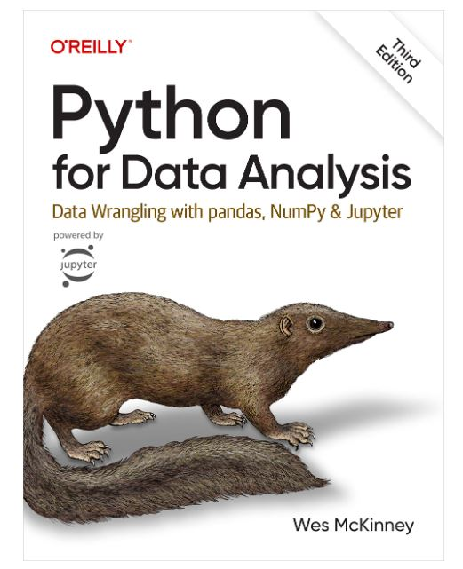

Séance 1: Introduction à Python
MATH60230 - Méthodologie de la finance empirique
🚀 Bienvenue à la MSc Finance à HEC Montréal !
- 3 crédits sur un demi semestre :
- 3 crédits × 2 × 3 heures = 18 heures de travail par semaine.
- 6 heures d’enseignement
⏳ Prévoyez 12 heures de travail personnel. 😰
Vincent Grégoire, PhD, CFA
👨🎓 Éducation :
- PhD Finance, U. of British Columbia
- MSc Ing. financière, U. Laval
- MSc Génie électrique, U. Laval
- Génie informatique, U. Laval
🔬 Domaines de recherche :
- économie de l’information
- finance et technologie :
- microstructure des marchés
- big data & IA en finance
- cybersécurité
Plan de la séance
- Introduction et plan de cours.
- Introduction à Python.
- Introduction à GitHub et GitHub Classroom.
- Devoir 1
Notes de cours

- Disponible en ligne.
- Changements à prévoir en cours de semestre (éviter d’imprimer)
- Tout récent, merci d’envoyer vos commentaires
Python for Data Analysis
- Disponible gratuitement en ligne
- Pour les cours 3-4
- Panels, manipulation de données, arrays, pandas, numpy.

Econometrics

- Disponible gratuitement par la bibliothèque (Springer)
Statistics and Data Analysis for Financial Engineering
- Disponible gratuitement par la bibliothèque (Springer)

Ressources
Plan de cours
- Tout est sur ZoneCours.
Communication
- Pour les questions, nous utiliserons [
Microsoft Teams] - canal
O365-MATH 60230 - J01 - H2026.
- canal
Pourquoi apprendre à coder ?
- C’est amusant
- Vous fait gagner du temps
- Produit de meilleurs travaux de recherche
- Vous le voulez1 sur votre CV
- Vous en avez besoin pour la MSc Finance
- Langage de programmation à usage général
- Sites web, jeux, logiciels complets
- Langage le plus populaire pour l’analyse de données1
- Logiciel gratuit et open source
- Grande communauté
- Beaucoup de code en ligne -> les LLM le connaissent bien
👍 Pour quoi est-il très bon ?
- Manipulation de données
- Visualisation
- Analyse de texte
- Statistiques et économétrie
- Algèbre linéaire
- Apprentissage automatique
- Web scraping
👎 Pour quoi est-il moins bon ?
- Applications à très haute performance (librairies supplémentaires nécessaires)
- Analyse statistique avancée
Pour utiliser Python, vous avez besoin de :
- L’interpréteur Python : pour exécuter votre code
- Un gestionnaire de librairies: pour gérer les librairies externes
- Un éditeur
Favoris : uv et Visual Studio Code
- Tous gratuits !
- Voir les notes de cours pour les détails d’installation
uv
- Gestionnaire de librairies pour Python
- Installe et gère Python
- Installe et gère les librairies tierces
- Un des éditeurs les plus populaires
- Gratuit, par Microsoft, open-core
- Extensible et personnalisable
- Multiplateforme
Git et GitHub
git
- Système de contrôle de version distribué gratuit et open source.
- Contrôle de version, pensez à “suivre les modifications” de votre code, en mieux
GitHub
- Une solution hébergée pour git, plus, détenue par Microsoft.
- Nous utiliserons GitHub Classroom pour les devoirs.
- Nous utiliserons GitHub Copilot pour l’assistance à la programmation par IA.
Vous devez créer un compte gratuit sur github.com et demander le Pack Développeur Étudiant.
Dans le cloud
- Vous pouvez également exécuter Python dans le cloud sur GitHub Codespaces1.
- Au-dessus du niveau gratuit (90 heures par mois pour les étudiants), vous devez payer.
- C’est une bonne solution alternative si vous ne pouvez pas exécuter Python sur votre ordinateur, ou si vous n’avez qu’une tablette.
Ressources en ligne
- GitHub Copilot / Microsoft Copilot
- ChatGPT / Claude
- Documentation Python
- Kaggle
- Stack Overflow
- Google / DuckDuckGo / Bing
Markdown
▶️ Commençons !
Maintenant, essayons un peu de
Pour le prochain cours
- Commencez le devoir 1
- Terminez la lecture de Part 1 - Python des notes de cours
- Les chapitres “Logging and Configuration” et “Stay Safe with Devcontainers” sont facultatifs

MATH60230